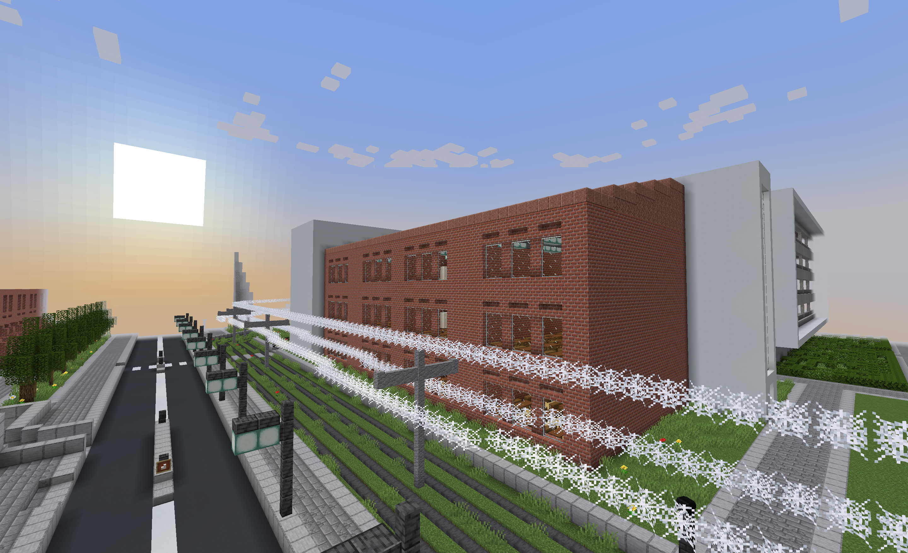
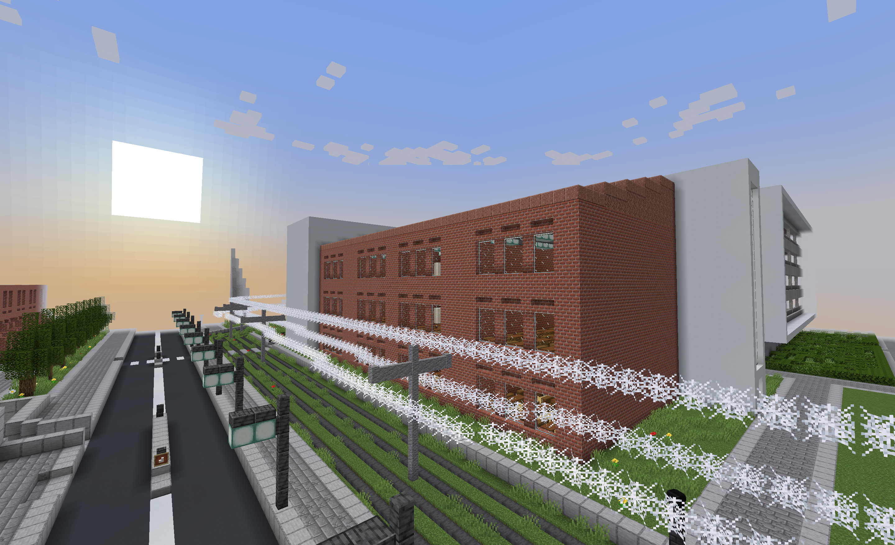
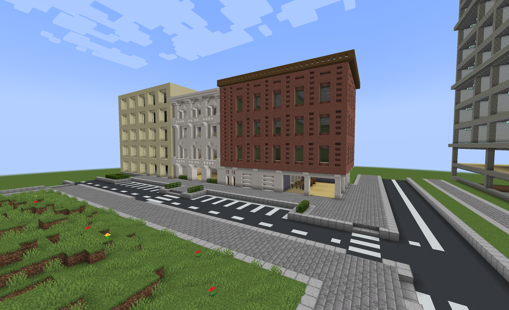
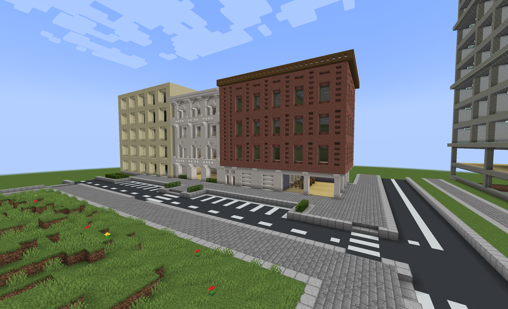

 

Op deze Minecraft-server ben ik bezig met het bouwen van een 'functionele' stad. Hierbij gaat het om infrastructuur, gebouwen, faciliteiten, een overheid, en nog veel meer. Maar zoals eerder benoemd heet de server Rivello County en niet Rivello City of Rivello Town. Dit komt omdat ik hiet uiteindelijk een gehele gemeente of provincie van wil maken met meerdere steden en interactie tussen de steden (buiten de bebouwde kom en binnen de politiek). Voor deze server probeer ik mij goed te oriënteren binnen de hedendaagse problemen binnen steden in Nederland en de Verenigde Staten. Zo kan ik namelijk deze problemen preventief aanpakken of de problemen toepassen om de stad zo realistisch mogelijk te maken.
Maelfore
Rechts heb ik twee bijlagen als voorbeeld gegeven. Op de bovenste afbeelding is één van de faciliteiten te zien in de stad Maelfore omringd door appartementen-complexen. De faciliteit is in dit geval een hockeyclub met twee hockeyvelden. Deze is centraal gelegen: dicht bij een tramstop, dichtbij een school (afbeelding eronder), niet ver van de overheidsgebouwen verwijderd en vlakbij een winkelcentrum aan de overkant van de straat. Ook is er een school, zoals eerder vermeld, met verschillende klaslokalen, een aula en een overdekt plein. Op het moment heeft de school geen doel. Het zou kunnen zijn dat ik deze school ga gebruiken als plaats voor introductie voor de server. Ook zou ik het gebouw kunnen gebruiken voor het opleiden van spelers in een bepaald vakgebied, als ik dit als verplichting instel voor bepaalde banen en functie's.
Birlon
Ik heb voor het preventief openen en testen van de server ook nog een andere stad. Een stad waarin veel een stuk goedkoper is. Waarbij er vrij weinig is gebouwd. Een stad nog kleiner dan een kleine wijk. Een soort sloeberwijk. Een wijk gemaakt voor die speler die heel weinig heeft. In deze stad is het makkelijker om onderdak te krijgen.
Aanpassingen
Wat ik nog wel merk is dat ik op nog te weinig winkelruimtes heb in de stad. Dit is iets waarop ik de komende bouwprojecten op zal letten. Zoals hiernaast te zien is ben ik al wel begonnen met een winkelstraat en ben ik bezig met een winkelcentrum, zoals weergeven op de afbeelding ernaast. Het lijkt natuurlijk op de afbeelding van het winkelcentrum dat er alleen appartementen zijn, maar als er goed wordt gekeken dan ziet u dat er de appartementen op een groter gebouw staan. Dat gebouw onder de appartementen is daadwerkelijk het winkelcentrum. Dit is wel een winkelcentrum dat niet alleen bestaat uit winkels, maar ook bedrijven en faciliteiten voor de bewoners van de bovengelegen appartementen, zoals een fitness of een wasserette.